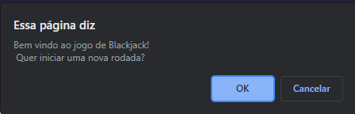

Descrição
O blackjack foi um projeto proposto como avaliação pela Labenu, onde o objetivo era criar um jogo semelhante ao blackjack, com interação do usuário escolhendo se ele queria de continuar ou não continuar jogando
O jogo é composto apenas por 1 jogador, e seu adversário é o computador. No final da rodada aparecem as pontuações e um alerta sobre quem ganhou
Tecnologias
- JavaScript